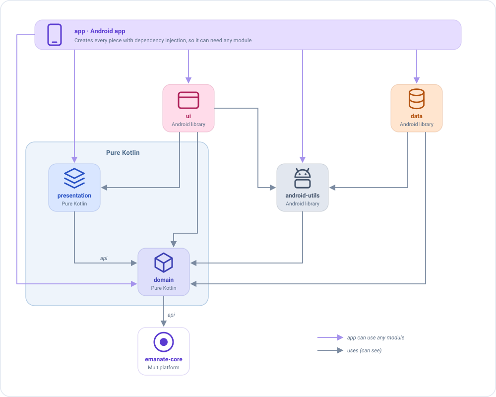

Recomendaciones¶
Emanate no te obliga a seguir ninguna estructura de proyecto: puedes meterlo todo en un único módulo y llamar a tus
clases como quieras. Esta página recoge cómo está organizada la app sample, y por qué. Quédate con lo que te
sirva.
Por dónde empezar
Si solo estás probando Emanate, olvídate de los módulos y empieza con uno. Los tres hábitos que merece la pena adoptar desde el primer día son organizar por funcionalidad, usar los mismos nombres en todas partes y mantener limpio el ViewModel. Dividir en módulos puede esperar a que la app crezca.
Divide la app en módulos¶
Un módulo es una parte del proyecto que se compila por separado y solo puede usar lo que declara como dependencia. Ese límite es justo lo que queremos: si un módulo no puede ver algo, nadie puede usarlo ahí por error.
El sample tiene seis módulos:
| Módulo | Qué vive aquí | Tipo | Depende de |
|---|---|---|---|
app |
La Application, la configuración de la inyección de dependencias y el manifest. |
App Android | Todo |
ui |
Contenidos de pantalla, navigators, diálogos, tema y recursos. | Librería Android | presentation, domain, android-utils, emanate-compose-android |
presentation |
Estado, acciones, eventos, inicializadores y ViewModels. | Kotlin puro | domain |
domain |
Modelos, casos de uso e interfaces de los repositorios. | Kotlin puro | emanate-core |
data |
Implementaciones de los repositorios, red y almacenamiento. | Librería Android | domain, android-utils |
android-utils |
Ayudas de Android compartidas por varios módulos, como leer y guardar JSON en SharedPreferences. |
Librería Android | domain |

Lee las flechas como "puede ver": ui puede ver presentation, pero presentation no puede ver ui. Tres detalles:
appve todos los módulos, porque crea todas las piezas con la inyección de dependencias.apiexpone una dependencia a los módulos de arriba.presentationdeclaradomainconapi, ydomaindeclaraemanate-coreconapi. Asíuipuede usar los modelos dedomainque aparecen en el estado, y todos los módulos pueden usaremanate-core. Conimplementation, un módulo se guarda sus dependencias para sí.android-utilstambién depende dedomain, para trabajar con sus modelos.
¿api o implementation?¶
Las dos declaran una dependencia. La diferencia es quién más puede verla:
| Declaración | Quién ve la dependencia | Úsala cuando |
|---|---|---|
implementation |
Solo el módulo que la declara. | La dependencia es un detalle interno. Es la opción por defecto. |
api |
El módulo y todos los que dependen de él. | Sus tipos aparecen en tu código público: estados, acciones, firmas de funciones o superclases. |
Imagina el estado de una pantalla de inicio que contiene una lista de usuarios y el rol de cada uno:
data class HomeState(val users: List<User>, val role: Role) : EmaState // User y Role viven en domain
presentation usa api para domain porque User y Role son modelos de domain y aparecen en el estado, así que quien
lo pinte necesita conocerlos. domain usa api para emanate-core porque sus casos de uso extienden EmaUseCase. data,
en cambio, usa implementation para domain: nadie por encima necesita verlo a través de data.
No marques todo con api: los módulos verían demasiado, y un cambio en uno obligaría a recompilar los otros. Y si ui usa
los modelos de domain directamente, declara también implementation project(':domain') en ui, para que no dependa de que
presentation mantenga su api.
Por qué presentation y domain son Kotlin puro¶
Kotlin puro significa que el módulo no tiene nada de Android: ni Context, ni View, ni R.string. Esto tiene dos
ventajas:
- El compilador hace cumplir la arquitectura. Un ViewModel no puede usar un
Contextni un recurso por error, porque el módulo no los tiene. No hace falta recordar una norma ni cazarla en una revisión. - Está preparado para Kotlin Multiplatform.
emanate-corees multiplataforma, así quepresentationydomainpueden convertirse en módulos multiplataforma y compartir los ViewModels con otras plataformas.
Además, sus tests se ejecutan en milisegundos en tu ordenador, sin emulador (consulta Testing).
¿Qué va dónde?¶
Cuando no sepas dónde va una clase, hazte esta pregunta:
| Si la clase... | Va en |
|---|---|
Pinta algo o necesita Android para funcionar (un composable, un navigator, un Toast) |
ui |
| Decide qué muestra la pantalla (estado, acciones, eventos, ViewModel) | presentation |
Es un concepto de negocio o un caso de uso (User, GetFriendsUseCase), o la interfaz de un repositorio (FriendsRepository) |
domain |
Implementa esas interfaces de repositorio, hablando con la API REST o la base de datos (FriendsRepositoryImpl) |
data |
domain dice qué datos necesita (la interfaz), y data decide cómo conseguirlos (la implementación).
Organiza por funcionalidad¶
Agrupa los archivos por pantalla, no por tipo. No crees un paquete states/ con todos los estados de la app y otro
viewmodels/ con todos los ViewModels: al cambiar la pantalla Home tendrías que saltar entre cinco paquetes.
En su lugar, cada pantalla es un paquete en presentation y otro en ui, con el mismo nombre:
presentation/…/presentation/home/ ui/…/ui/home/
├── HomeState.kt ├── HomeScreenContent.kt
├── HomeAction.kt └── HomeNavigator.kt
├── HomeEvent.kt
├── HomeDialog.kt
├── HomeViewModel.kt
└── HomeInitializer.kt (solo si la pantalla recibe datos)
Todo lo de Home está en dos carpetas con el mismo nombre. Para borrar la pantalla, borras esas carpetas.
Nombres¶
Si todas las pantallas siguen la misma convención, puedes abrir cualquiera y saber dónde está cada cosa. Tomemos la pantalla Home como ejemplo:
| Tipo | Convención | Ejemplo |
|---|---|---|
| Estado | <Pantalla>State |
HomeState |
| Estado por defecto | companion object { val DEFAULT } |
HomeState.DEFAULT |
| Acción | <Pantalla>Action, con el nombre de lo que hizo el usuario |
QueryWritten, FriendClicked |
| Evento | <Pantalla>Event, con el nombre de lo que pasó |
FriendSelected, CloseClicked |
| ViewModel | <Pantalla>ViewModel |
HomeViewModel |
| Diálogos en el estado | <Pantalla>Dialog |
HomeDialog.LoadError |
| Resultados de los side effects | <Pantalla>Action.SideEffects.<Qué> |
HomeAction.SideEffects.QueryLoaded |
| Contenido de Compose | <Pantalla>ScreenContent |
HomeScreenContent |
| Inicializador | <Pantalla>Initializer |
HomeInitializer.HomeUser |
| Preview | Preview<Qué>, con el prefijo para que las previews queden juntas |
PreviewAdmin, PreviewLoading |
Las dos filas con pista son las que más ayudan a entender el código:
// Acción: dice lo que el usuario HIZO, no lo que queremos que ocurra
data class QueryWritten(val query: String) : HomeAction // sí
data class SearchFriends(val query: String) : HomeAction // no: suena a orden
// Evento: dice lo que PASÓ, y el navigator decide qué hacer con él
data class FriendSelected(val friend: Friend) : HomeEvent // sí
data class GoToFriendDetail(val friend: Friend) : HomeEvent // no: el ViewModel no debe saber nada de navegación
Crea clases base¶
Cuando todos los ViewModels necesitan lo mismo, escríbelo una sola vez.
Crea un ViewModel base aunque al principio esté vacío. Las clases de Emanate (EmaViewModel...) pertenecen a la
librería: no puedes modificarlas. Una clase base propia es lo contrario: es tu código, y es el único sitio donde
puedes añadir algo que deba afectar a todas las pantallas de la app (un logger, una gestión de errores...) el día que lo
necesites. Sin ella, tendrías que editar cada ViewModel uno a uno. Con ella, cambias una sola clase y mantienes el control
de la app.
// En `presentation`: todos los ViewModels heredan de él
abstract class BaseViewModel<S : EmaState, A : EmaAction, E : EmaEvent>(initialDataState: S) :
EmaViewModel<S, A, E>(initialDataState)
No todo va en una clase base
Una clase base la comparten todos los ViewModels, así que mete en ella solo lo que todos necesitan. Para un
comportamiento que solo necesitan algunas pantallas, es mejor un plugin o una función de
extensión del setup que una jerarquía más profunda (BaseViewModel → BaseListViewModel →
BasePaginatedListViewModel...). Crear subclases de la clase base es un antipatrón: prefiere la composición frente a
la herencia.
Mantén limpio el ViewModel¶
El ViewModel es la parte de la app más fácil de probar, si lo mantienes simple. Estas reglas lo protegen.
Nada de tipos de la plataforma¶
Un ViewModel no debe usar un context, una vista ni recursos.
Cada pieza tiene un único trabajo¶
-
Los repositorios solo se usan desde los casos de uso, nunca directamente desde un ViewModel.
// Mal: el ViewModel habla con el repositorio add<HomeAction.RefreshRequested> { repository.getFriends(state.query) } // Bien: pasa por un caso de uso add<HomeAction.RefreshRequested> { getFriendsUseCase(GetFriendsUseCase.Input(state.query)) } -
Los casos de uso hacen una sola cosa, y reciben una única data class
Input, declarada dentro del propio caso de uso, en lugar de varios parámetros sueltos.class GetFriendsUseCase(private val repository: FriendsRepository) : EmaUseCase<GetFriendsUseCase.Input, List<Friend>>() { override suspend fun useCaseFunction(input: Input): List<Friend> = repository.getFriends(input.query, input.onlyOnline) data class Input(val query: String, val onlyOnline: Boolean = false) } // En un side effect: cada valor tiene nombre, así que la llamada se explica sola getFriendsUseCase(GetFriendsUseCase.Input(query = state.query, onlyOnline = true))La llamada se lee bien (
onlyOnline = trueen lugar de untruesuelto), y cuando el caso de uso necesita un valor nuevo añades un campo con valor por defecto aInput, sin tocar los sitios que ya lo llaman. Consulta Casos de uso para más información. -
Los reducers solo calculan el estado. La lógica de negocio (llamadas al backend, guardar...) va en los side effects.
Importante: un reducer debe ser una función pura e idempotente
Dados el mismo estado y la misma acción, siempre debe devolver el mismo estado nuevo, y no hacer nada más: ni llamadas al backend, ni leer el reloj ni números aleatorios, ni cambiar nada fuera del estado. Así el estado es predecible y un reducer es trivial de probar. Consulta Reducers.
// Mal: el reducer llama al backend, y su resultado cambia entre llamadas add<LoginAction.LoginClicked> { state.copy(user = repository.login(state.name)) } // Bien: el reducer solo cambia el estado, el side effect hace el trabajo reducers { add<LoginAction.LoginClicked> { state.copy(isLoading = true) } } sideEffects { add<LoginAction.LoginClicked> { dispatch(LoginAction.SideEffects.LoginResult(loginUseCase(...))) } }
La vista solo informa y pinta¶
- La vista no llama a más funciones del ViewModel que
dispatch. - Pon los valores derivados en el estado, no en la vista, para que la pantalla no tenga lógica que probar:
data class HomeState(val userData: UserData?, val friends: List<Friend>) : EmaState {
val showCreateButton get() = userData?.role == Role.ADMIN // la vista solo lo lee
val showEmptyList get() = userData != null && friends.isEmpty()
}
No crees tus dependencias, recíbelas¶
Un ViewModel suele necesitar algo que habla con el exterior: un caso de uso que llama al backend, una base de datos, el reloj... No lo crees dentro del ViewModel. Pídelo en el constructor y deja que otro decida cuál darle.
// Mal: el ViewModel crea la pieza real él mismo, así que siempre llama al backend real
class HomeViewModel : BaseViewModel<HomeState, HomeAction, HomeEvent>(HomeState.DEFAULT) {
private val getFriendsUseCase = GetFriendsUseCase(RemoteFriendsRepository())
}
// Bien: la recibe, y no sabe (ni le importa) cuál es
class HomeViewModel(
private val getFriendsUseCase: GetFriendsUseCase,
initialState: HomeState
) : BaseViewModel<HomeState, HomeAction, HomeEvent>(initialState)
El ViewModel es el mismo en los dos casos, pero ahora quien lo crea elige lo que recibe:
| Dónde | Qué recibe | Por qué |
|---|---|---|
| La app | El caso de uso real, que llama al backend. | Es lo que necesita el usuario. |
| Un test unitario | Un doble que devuelve una lista fija. | El test es rápido y siempre da el mismo resultado, sin red. |
Un @Preview |
Un doble con datos de ejemplo. | La preview se pinta sin backend. |
| Una build de QA | Un doble que falla o es lento. | Puedes ver los estados de error y de carga de la pantalla. |
Si el ViewModel creara el caso de uso por sí mismo, nada de esto sería posible sin cambiar su código. Consulta Inyección de dependencias para ver cómo lo hace el sample con Koin.
No es solo para los casos de uso. Un ViewModel también puede recibir sus middlewares, reducers y side effects, y
entonces la inyección decide cómo se comporta toda la pantalla: por ejemplo, un side effect que devuelve amigos falsos en
una build de QA, o un middleware que añade latencia para ver el estado de carga. El ViewModel se escribe una vez y no
cambia. Consulta Inyectar piezas para aprender a escribirlas, y
Las piezas son valores para ver cómo se declara una pieza fuera de setup.
Textos¶
Pon el idioma por defecto en values/ y las traducciones en values-xx/ (values-es/, values-fr/...). Mantén juntos
los textos de cada pantalla y ponles el nombre de la pantalla como prefijo, para saber dónde se usa cada uno:
<string name="home_title">Amigos</string>
<string name="home_empty_message">Todavía no tienes amigos</string>
<string name="login_error">Usuario o contraseña incorrectos</string>